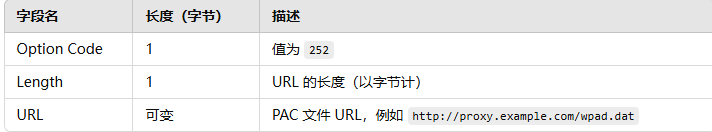
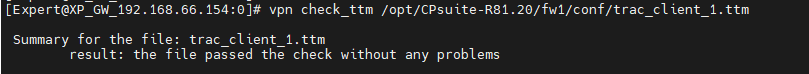
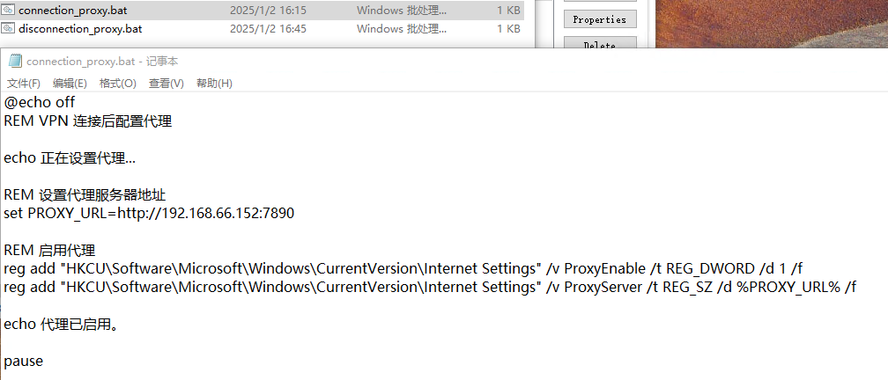
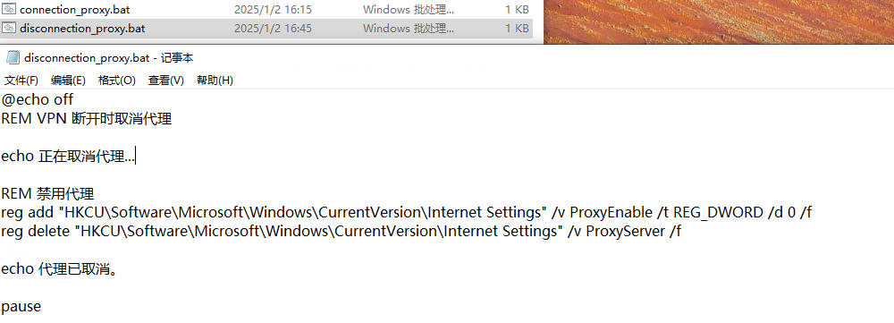

文档作者：姜新鹏
时间:2025/1/2
1.1.1. 为所有托管的远程访问安全网关配置连接后脚本 2
3.1. connection_proxy.bat脚本文件内容 5
3.2. disconnection_proxy.bat脚本文件内容 6
文档说明:Remote Access VPN 拨入后无法获取DHCP 所携带的option 252 字段。 且已确认GW 不支持dhcp server option 252. 现使用自动加载代理脚本方式实现与option 252 类似的功能需求。
DHCP Option 252 是一种 DHCP 协议扩展选项，用于下发 Web Proxy Auto-Discovery Protocol (WPAD) 的 URL 给客户端，以便客户端自动获取代理设置文件（PAC 文件）的路径
Option 252 数据结构
Option 252 的内容以二进制形式封装在 DHCP 数据包中，具体格式如下：

连接后脚本（Post Connect Script） 功能可以在远程访问 VPN 客户端连接到安全网关后，在客户端计算机上运行一个脚本或可执行文件。
确保脚本或可执行文件在客户端计算机上存在，并且路径正确。
重要说明
连接后脚本以用户级权限运行。出于安全原因，如果用户在 Windows
登录之前执行了 安全域登录（Secure Domain
Login），则不支持运行连接后脚本。
关闭所有 SmartConsole 窗口。
使用 GuiDBEdit Tool 连接到安全管理服务器 / 域管理服务器。
在左上角窗格中，进入 Table - Global Properties - global_properties。
在右上角窗格中，选择 firewall_properties。
按 CTRL+F（或转到 Search 菜单 - Find），粘贴 desktop_post_connect_script，然后点击 Find Next。
在下方窗格中，确保 desktop_post_connect_script 属性没有任何值（为空）。
如果有值，右键单击该属性并选择 Reset。
在右上角窗格中，选择 firewall_properties。
按 CTRL+F（或转到 Search 菜单 - Find），粘贴 desktop_post_connect_script_show_window，然后点击 Find Next。
在下方窗格中，右键单击 desktop_post_connect_script_show_window - 选择 Edit... - 选择 "true" - 点击 OK。
默认值为 false，脚本运行在隐藏窗口中。
保存更改：转到 File 菜单 - 点击 Save All。
关闭数据库工具（GuiDBEdit Tool）。
使用 SmartConsole 连接到安全管理服务器 / 域管理服务器。
在每个安全网关 / 集群对象上安装策略。
注意： 有关此 TTM 文件的更多信息，请参见
sk75221。
a. 在安全网关 / 每个集群成员上连接到命令行。
b. 登录到 Expert 模式。
c. 备份当前的 $FWDIR/conf/trac_client_1.ttm 文件：
cp -v $FWDIR/conf/trac_client_1.ttm{,_BKP}
编辑当前的 $FWDIR/conf/trac_client_1.ttm 文件：
vi $FWDIR/conf/trac_client_1.ttm
:post_connect_script_show_window (
:gateway (desktop_post_connect_script_show_window
:valid (false)
:default (false)
)
)
:post_connect_script (
:gateway (desktop_post_connect_script
:valid (false)
:default ("C:\connection_proxy.bat")
)
)
备注： 修改完成后可通过命令检查配置是否正确
“vpn check_ttm /opt/CPsuite-R81.20/fw1/conf/trac_client_1.ttm”

保存 TTM 文件的修改。
在 SmartConsole 中，向安全网关或集群成员安装策略。
注意： 新设置将在远程访问 VPN 客户端下一次连接到安全网关或集群成员时生效。
断开连接后的脚本（Post Disconnect Script） 功能可以在远程访问 VPN 客户端断开与安全网关（Security Gateway）的连接后，在客户端计算机上运行一个脚本或可执行文件。
确保脚本或可执行文件在客户端计算机上存在，并且路径正确。
重要说明
断开连接后的脚本以用户级权限运行。出于安全原因，如果用户在 Windows
登录之前执行了 安全域登录（Secure Domain
Login），则不支持运行断开连接后的脚本。
在每个适用的安全网关或集群成员上执行以下步骤：
连接到安全网关或集群成员的命令行。
登录到 Expert 模式。
备份当前的 $FWDIR/conf/trac_client_1.ttm 文件。
为了配置断开连接后的脚本功能，在当前的 $FWDIR/conf/trac_client_1.ttm 文件中添加以下部分：
:post_disconnect_script_show_window (
:gateway (desktop_post_disconnect_script_show_window
:valid (false)
:default (false)
)
)
:post_disconnect_script (
:gateway (desktop_post_disconnect_script
:valid (false)
:default ("C:\disconnection_proxy.bat")
)
)
:post_disconnect_mode (
:gateway (desktop_post_disconnect_mode
:valid (false)
:default (1)
)
)
保存 TTM 文件的修改。
在 SmartConsole 中，向安全网关或集群成员安装策略。
注意： 新设置将在远程访问 VPN 客户端下一次连接到安全网关或集群成员时生效。
post_disconnect_script_show_window
默认值： true 或 false。
设置为 true 显示脚本窗口。
设置为 false（默认）隐藏脚本窗口。
post_disconnect_script
默认值： 客户端计算机上的脚本路径。
默认值为空字符串。
post_disconnect_mode
默认值： 0。
可能值：
0 - 功能禁用（默认）。
1 - 仅用户发起的事件会运行脚本。
2 - 所有事件都会运行脚本。
【@echo off
REM VPN 连接后配置代理
echo 正在设置代理...
REM 设置代理服务器地址
set PROXY_URL=http://192.168.66.152:7890
REM 启用代理
reg add "HKCU\Software\Microsoft\Windows\CurrentVersion\Internet Settings" /v ProxyEnable /t REG_DWORD /d 1 /f
reg add "HKCU\Software\Microsoft\Windows\CurrentVersion\Internet Settings" /v ProxyServer /t REG_SZ /d %PROXY_URL% /f
echo 代理已启用。
Pause】

【
@echo off
REM VPN 断开时取消代理
echo 正在取消代理...
REM 禁用代理
reg add "HKCU\Software\Microsoft\Windows\CurrentVersion\Internet Settings" /v ProxyEnable /t REG_DWORD /d 0 /f
reg delete "HKCU\Software\Microsoft\Windows\CurrentVersion\Internet Settings" /v ProxyServer /f
echo 代理已取消。
Pause】

备注： 编写好的脚本可批量通过GPO或者借助其它第三方桌管工具将文件推送致客户端特定的目录下。
备注：
参考 sk180657 - "Client is not compatible with the connected gateway." error message shows